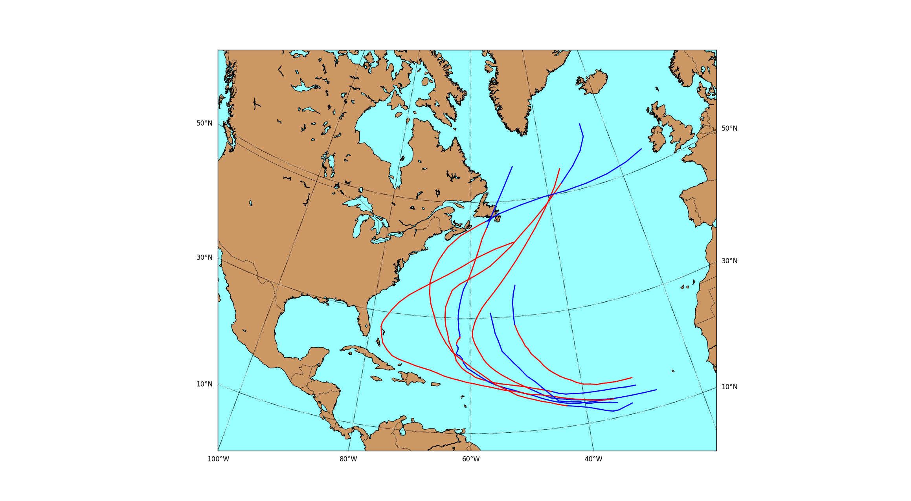
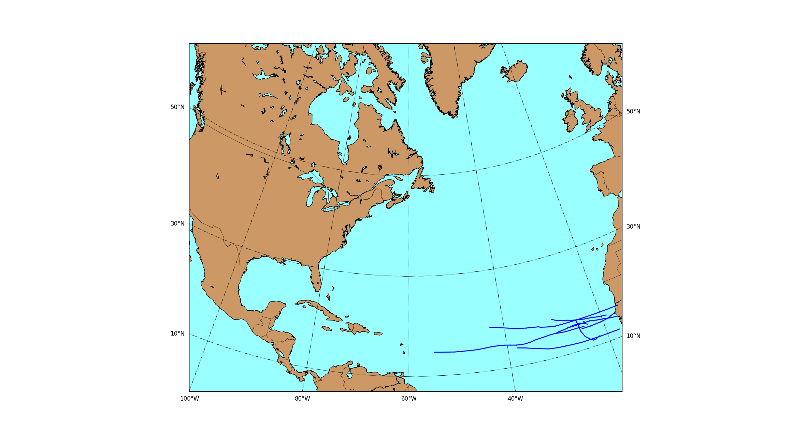
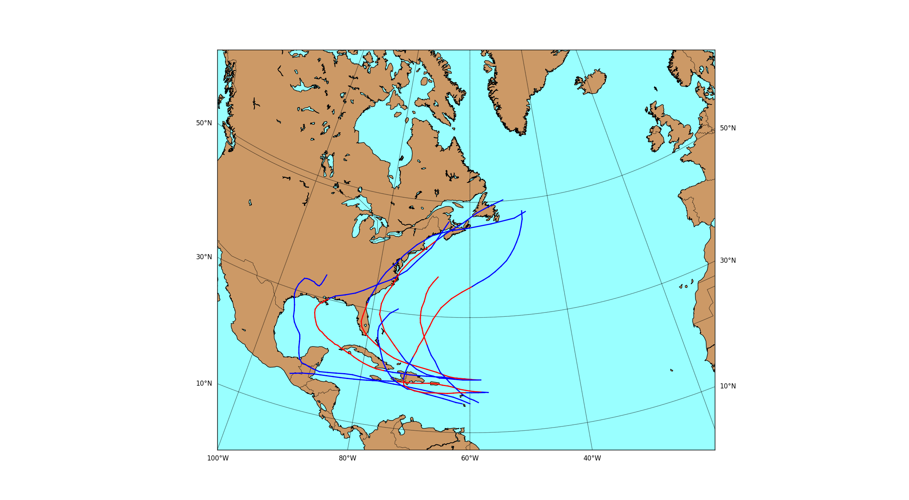

Hurricane Track Modeling via Manifold Learning
(Stats 406 Final Project)
Manifold learning is a powerful nonlinear dimensionality reduction technique, where data in a high-dimensional ambient space are modeled as lying along some smooth, low-dimensional manifold. By learning a parameterization of the underlying manifold, we can find a low-dimensional representation of the data that preserves the latent information.
Ordinarily, the input data for manifold learning must be contained in some Euclidean space. However, it's also possible to handle data of varying size, such as time series data, by utilizing kernel methods. Specifically, given a distance function, we can construct a kernel of the distances to each data point. Most manifold learning algorithms can then use these pairwise distances to compute a low-dimensional embedding.
In this project, I applied these techniques to model the track (location over time) of hurricanes in the Atlantic Ocean as a low-dimensional manifold. My approach closely followed that of Shen-Shyang Ho et. al. in their paper, Manifold Learning for Multivariate Variable-Length Sequences With an Application to Similarity Search. I then used nonparametric kernel regression to estimate the probability that an unknown hurricane makes landfall.
Read the Report
Explore the Codebase
Below are some examples of the tracks from several sets of similar storms. The red portion of the track is when the storm was hurricane strength, whereas the blue portion is when the winds were tropical storm force or lower.


